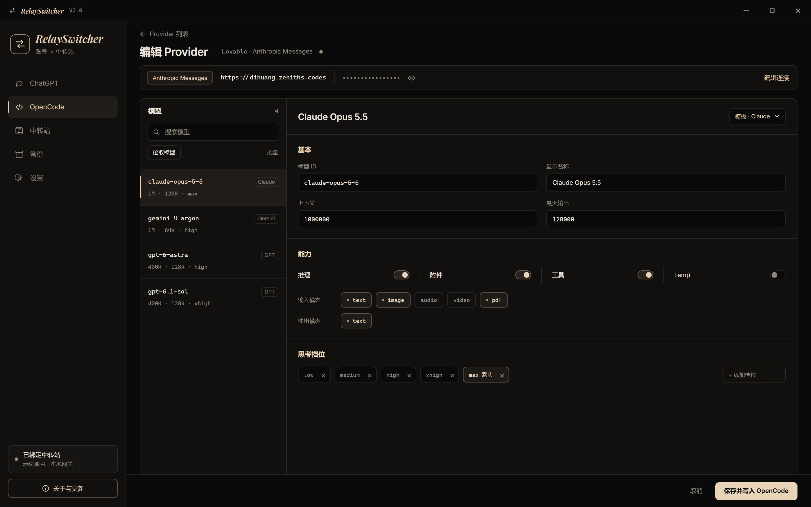
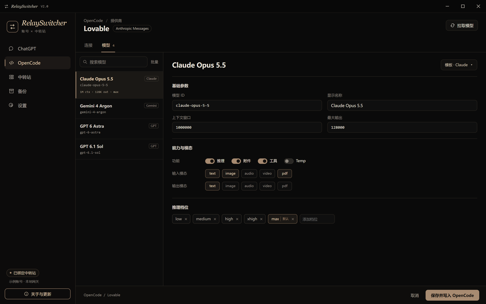
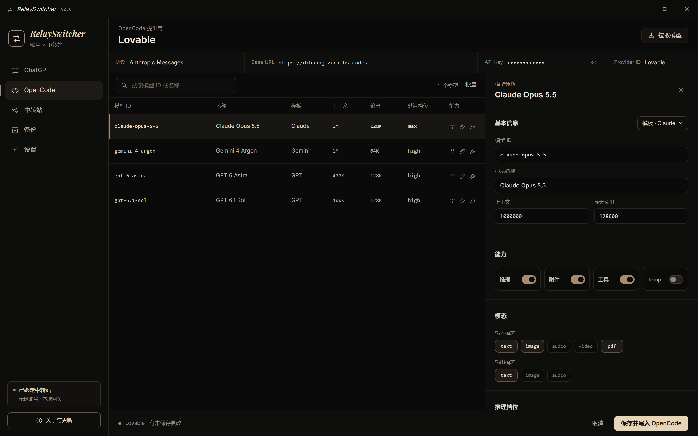

A · 一屏工作台
- 顶部一行连接摘要（协议、地址、Key），点右边「编辑连接」才展开
- 左：模型列表；右：参数。两边各自滚动，整页不动
- 适合：连接很少改，主要在调模型参数

B · 两个标签页
- 「连接」「模型」两个标签，各占满一屏
- 看模型时完全看不到连接信息，最清爽
- 适合：喜欢一次只处理一件事

C · 表格 + 右侧抽屉
- 模型排成表格，上下文、输出、默认档位一眼对比
- 点一行，右侧出参数面板；连接信息常驻在表格上方一行
- 适合：模型多，经常横向比较参数
